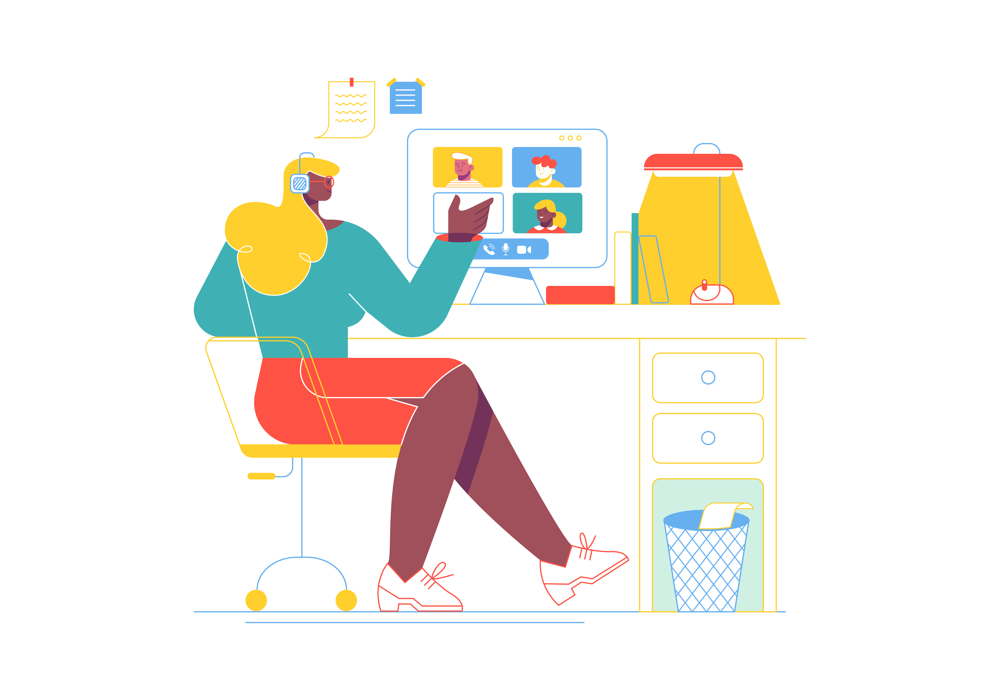

Main Menu
It is better for students to start looking for part-time work in their 1st and 2nd year.
In the final years, studying is no more difficult, but it will seem that the workload has become higher.
Moreover, the approach of the graduation project will make students nervous. What are your thoughts on a part-time job?
If you manage to find an excellent vacancy during the 2nd and 3rd courses, then in a couple of months
you will be able to adapt to the new educational and work regime.
After six months, it will become quite easy for you to combine all your
responsibilities and even writing a thesis will not affect your part-time job.